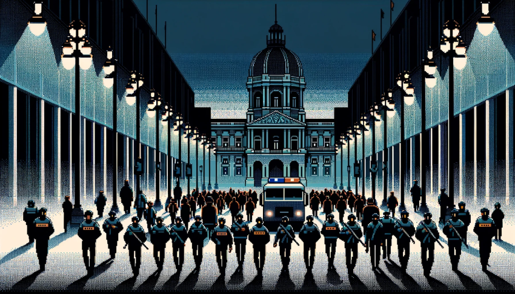
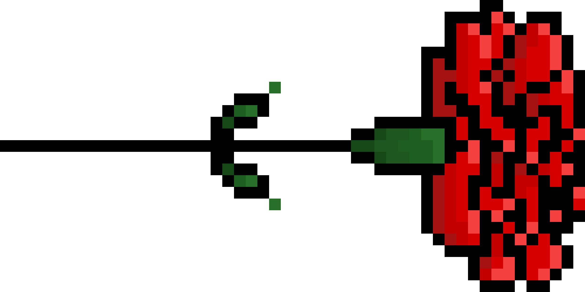

Tentar novamente.
LIBERTY BREAKOUT
COMEÇAR
◀ return

Ano de 1970: Portugal, sob um regime ditatorial, tornara-se um lugar sombrio e opressivo. As ruas ecoavam com os passos cautelosos das pessoas, que viviam com o constante peso do medo. Os prédios governamentais erguiam-se como símbolos de autoridade implacável, enquanto a presença policial recordava a todos o controlo absoluto do regime.
SEGUINTE

SALTAR